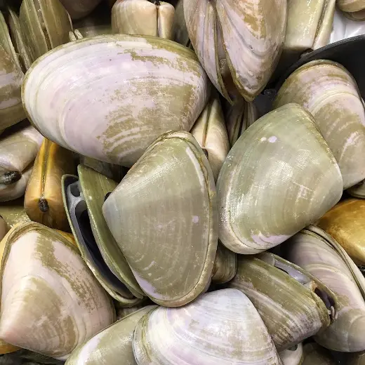

Pipis
Pipis is a wild protein you can forage from May to September in Subtropical east coast, Temperate south-east and South-west. Smooth, triangular clams just under the sand of surf beaches; twist your feet at the water's edge to find them.

When is pipis in season in Australia?
Pipis is usually in season May to September. Timing shifts with weather, latitude and altitude.
Where does pipis grow in Australia?
Pipis grows in Australian Capital Territory, New South Wales, Queensland, South Australia, Victoria, Western Australia. Regions: Subtropical east coast, Temperate south-east, South-west.
How do you recognise pipis?
Smooth, triangular clams just under the sand of surf beaches; twist your feet at the water's edge to find them.
How do you harvest pipis?
Check local rules, licences, size limits and water-quality warnings before taking any shellfish or fish.
How do you eat pipis?
Pipis in XO sauce, garlic and white wine, or chilli.
How do you store pipis?
Purge in seawater; cook fresh.
What is pipis good for?
Protein, Iron & calcium.
What can you cook with pipis?
- Pipis in XO sauce: Wok-fried pipis with XO sauce and spring onion.